Fullhouse Documentation
Getting Started
Firstly, we would like to thank you for purchasing Fullhouse Wordpress theme and chosen it for your website. We outline all kinds of good information, and provide you with all the details you need to use the Wordpress theme.
If you are unable to find your answer here in our documentation, feel free to ask for help from our support team, all you have to do is submitting a ticket via our Support Ticket system or email us: help@wpopal.com.
If you like this theme, Please support us by rating us 5 stars (How to rate?)
Download and Installation
The instruction is to help you with installation of the Fullhouse theme.
Download packages
Purchase Fullhouse template from ThemeForest then you can download our template package on there.
Extract package that include all files and folders of theme. When done, you should see fullhouse_theme.zip (zip file name can be changed from version to version).
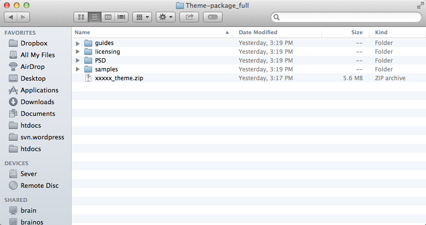
Once the download is complete, unzip the file and you would see the following packages:
- Guides - our detail documentation for the theme
- Theme folder - for manual installation
- Samples - the sample data of the demos, you can import it
- PSD - the PSD files of the theme
- Licensing - the theme license
System Requirements
When selecting a hosting service, you should check to see that these server requirements are provided and installed on their web servers:
- PHP version 5.6 or greater
- MySQL version 5.6 or greater
Theme Installation
There are 2 ways to install a Wordpress theme.
Installing Theme From the WordPress Dashboard
Installing a WordPress theme is super easy, you’ll see our video guide:
- Step 1: Navigate to Appearance → Themes in your WordPress admin dashboard.
- Step 2: Click the Add New button at the top of the page and go for the Upload option.
- Step 3: Choose fullhouse_theme.zip then click Install
- Step 4: Wait while the theme is uploaded and installed then activate the theme.
Install theme via FTP
Many users are on shared hosting with low upload limits, and in such situations the Fullhouse theme is often too large to install through Wordpress. We suggest you should upload it via FTP.
If you don't know how to use FTP visit this link for information: http://codex.wordpress.org/FTP_Clients . You will need to first uncompress the PACKAGE-theme.zip file you have found in the master zip downloaded from Themeforest. This zip uncompresses into a normal folder. This unzipped folder is all you need to transfer via ftp and if you open it, you will see all sorts of folders and css and php files which together contain all the theme coding.
Using the FTP program transfer this folder which contains the above files to the Wordpress installation theme root directory: /wp-content/themes.
Do not upload any of the other files or folders such as licensing or resource or documentation. Uploading any of the other folders may cause problems resulting in the theme not working properly. Learn from Wordpress Official Documentation about installing theme with FTP client or with cPanel: http://codex.wordpress.org/Using_Themes
Activate Fullhouse as default theme
After completing the upload, activate the theme as per activating any other theme.
Goto your Dashboard >> Appearance >> Themes >> Activate Fullhouse template
Follow the instruction from the image below:

Known problems when installing the theme
a. The “Broken theme and/or stylesheets missing” error is most common when you install or activate a new theme.
If you get an error saying that the stylesheet is missing, then you have uploaded the wrong folder. Please check that you are uploading the fullhouse_theme.zip within the Theme Files folder. You have to unzip the package file that you download from Themeforest to find this.
b. Problems with uploading via WP admin panel due Upload limit.
You may check your file upload limit on Your Media Uploader page in WordPress. Depending upon the web hosting company and the conditions of the service they provide it may vary. The most common is about 8 MB which is more or less enough. But uploading some media files like audio and video may become a problem with for example 2 MB upload limit.
We decided to share some tips about how to extend your maximum file upload size in WordPress:
1. Through functions.php file:
You may add the below mentioned code in the functions.php file of your theme
@ini_set( 'upload_max_size' , '64M' );
@ini_set( 'post_max_size', '64M');
@ini_set( 'max_execution_time', '300' );
2. Through PHP.INI file:
If you cannot see the php.ini file in your directory create the new one with below mentioned code and upload it to your root folder on your web server.
If you can see the php.ini file then change parameters or add :
upload_max_filesize = 64M
post_max_size = 64M
max_execution_time = 300
In case that tip does not work with 64MB, try it with 10MB.
3. Through .htaccess method
You may try modifying the existing .htaccess file in the root directory or creating a new one.
Add the following code in the existing or new .htacess file:
php_value upload_max_filesize 64M
php_value post_max_size 64M
php_value max_execution_time 300
php_value max_input_time 300
You can reset all of the setting for the each page on our custom panel by clicking “Reset” button on the bottom.
Plugins Installation
Right after the theme was activated, a notification at the top of the screen will suggest to continue with the installation of the plugins recommended for getting the best our of your theme.
Follow the installation steps below:
Step 1. Click ‘Begin installing plugins‘ and select the plugins you need to install from the list.

Step 2: Select all plugins then choose Install , Click Apply to install all plugins
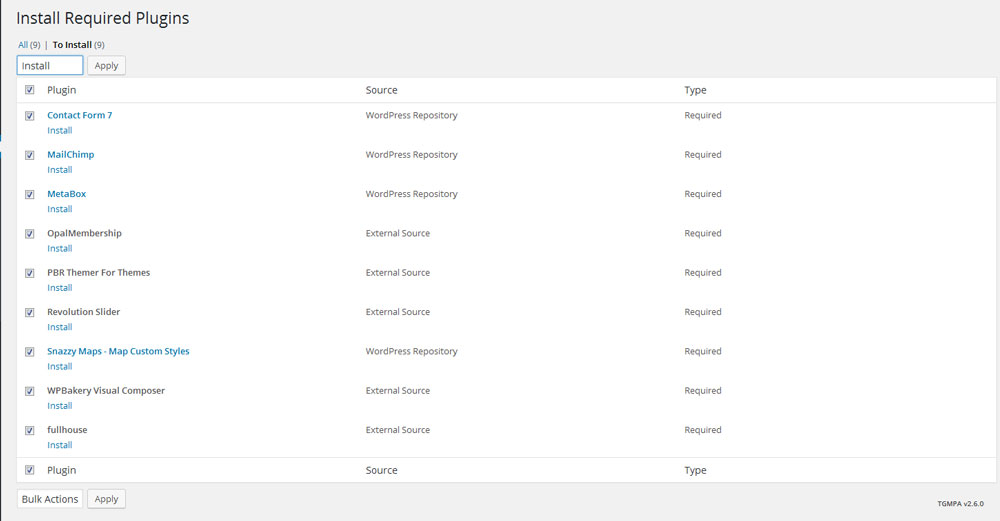
- Plugins Using in Fullhouse theme
- Contact Form 7: Allow you create contact forms on Contact Page.
- MailChimp : to use newsletter function
- Revolution Slider: premium responsive slider.
- WPBakery Visual Composer: powerful visual composer to create page layout.
- Snazzy Maps-Map Customize Styles: Apply styles to your Google Maps with the official Snazzy Maps WordPress plugin.
- PBR Themer for Themes: Implement rick functions for themes base on wpo framework and load widgets for theme used.
- Metabox : Create custom meta boxes and custom fields for any post type in WordPress.
- Fullhouse : (Opal Estate)An e-commerce toolkit that helps you sell anything.
- Opal Membership : An e-commerce toolkit that helps you sell anything.
Step 3: After Installing all Plugins, select Activate then click Apply to active all plugins.
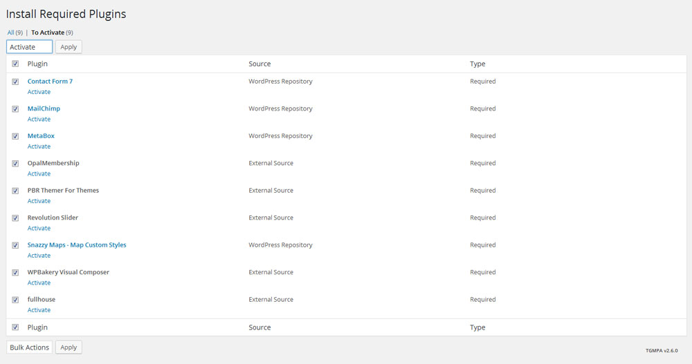
Follow our video guide to know more :
Install Data Demo
Step 1 :Install Data Demo
One click import data
Opal Team very happy to provide for customer a new function to import data more quickly. It is "One click import"
With "One click import", customer do not import step by step data as import usual. It import all data like : Content, Widget, Revolution slider, Menu, Customize...
One click import data
To use it make sure file of your theme have to "import" folder in "inc" folder like this:
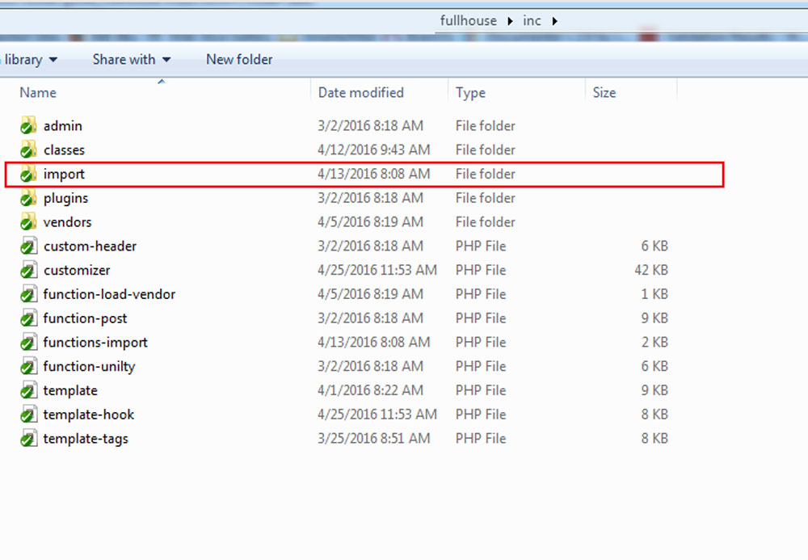
Go to Dashboard -> Appearance -> WpOpal Import . You can see " Get demo from live server", please click in "Fullhouse sample" :
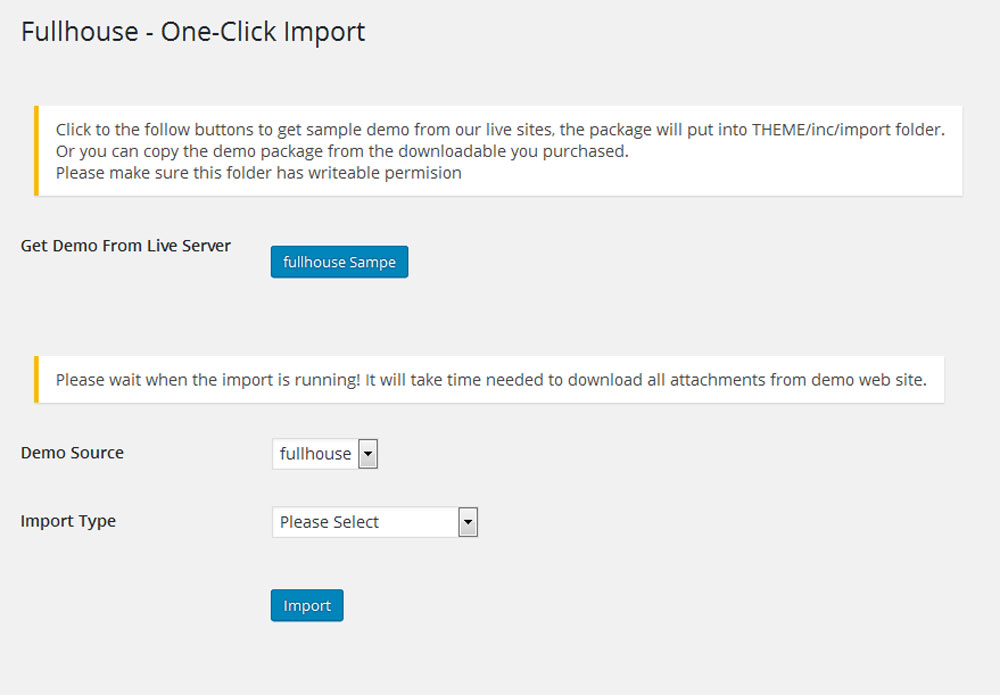
1. Demo Soure : Choose name of demo to import .
2.Import Type : Choose name of type to import ( choose All or chose one of types to import)
- All - suggested option: the option will import all demo content (products, menus, theme options, ect) to replicate fullhouse demo on your server without any other step.
- Content - import site content: posts, products.
- Widgets - import widgets used in Fullhouse demo site.
- Theme + Page options - import theme and page settings.
- Menu - import all menus.
- Revolutions Slider - import sliders built with with revolutions slider plugin.
- VC Template - import pages built with visual composer plugin.
File to import all data is : content.xml
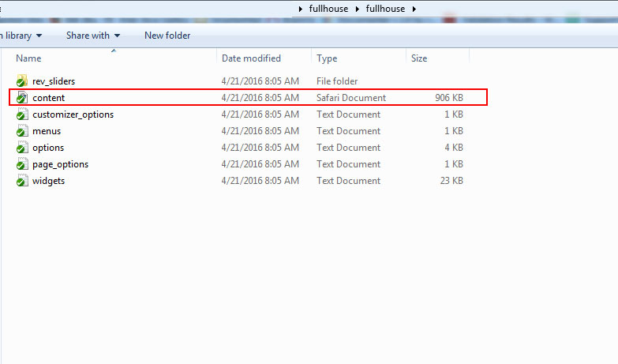
Specially, You can go to Wpopal Import to import config of menu, widget, page and theme options.
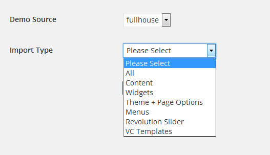
Click "Import" and popup is displayed, click "OK" to continue import data
When import has been imported it will display popup : "Import is successful"
Follow our video guide to know more :
Or You can import data by tool of wordpress.
Importing The Demo Data - XML File
The Fullhouse theme comes with importable demo data, such as pages, products, blog, posts, portfolio items, etc, to help you get started in case you’re running on a fresh WordPress installation.
But before import data you should go to "Settings->Permalinks and choose Default in common settings" , you import or export data will not be lost.

Then go to Settings-> Wpopal Themer and enter your settings.
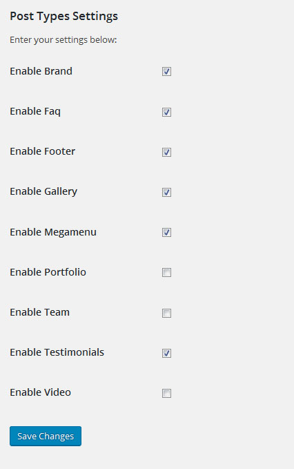
Then go to Visual Composer-> Role Manager and choose Custom in post types and Enable Visual Composer for pages, posts and custom post types. Click "Save Changes" to save your setting.
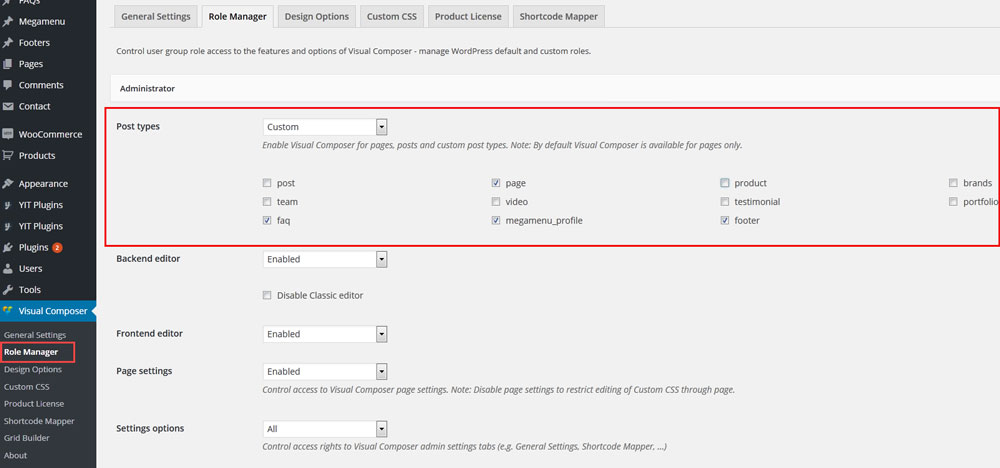
And go to step by step bellow:
Step 1: From the WordPress admin area go to Tools >> Import and click on the WordPress link.

Step 2: You can import all of our demo by one step
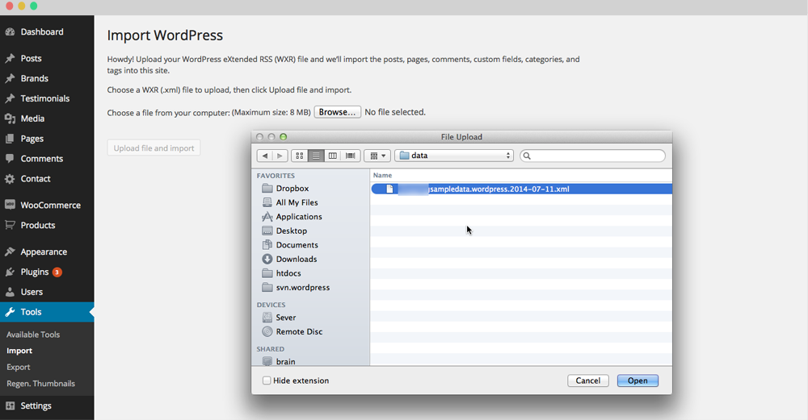
Step 3: Assign Authors
Choose the option to download all data sample file and click Submit. Do not interrupt/cancel the import process!
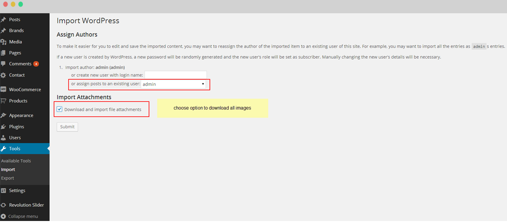
The importer should be run only once. If something went wrong and you need to import the content again, you may need to reset your WordPress.
Use this plugin to reset the WordPress database : http://wordpress.org/plugins/wordpress-database-reset/
Step 4 :Set a page as Home Page
After import Dummy Data you need to set default Home page for your site, from your WordPress dashboard, navigate to Settings → Reading.
Select “A static page” and choose “Dummy Homepage” as the Front Page.

Save change then Homepage data sample will be set.
Step 5 - Done! But you still need to set the Menu, Widget, Slider. Follow more on bellow
Follow our video guide to know more :
2. Import Revolution Slider
1.If you choose import data by tool of wordpress
From the WordPress admin area go to Revolution Slider >> Import Slider and select Slider file on our package.

2.If you choose import data by one click import
Revolution slider will be displayed after import data by One click import.
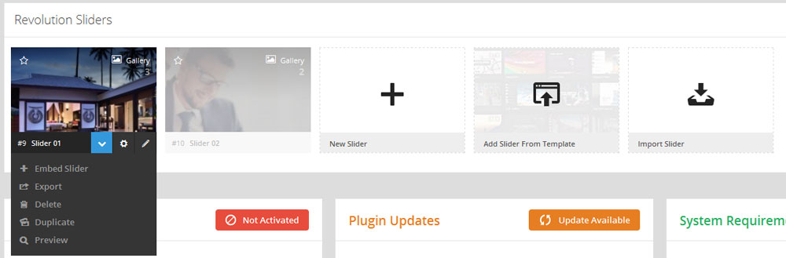
you can see all slider displayed in here and you can
+ Embed slider.
+Export.
+Delete.
+Duplicate.
+Preview.
+Settings.
+Edit slider.
Widgets Installation
1.If you choose import data by tool of wordpress
a. Install widget
Go to Admin Panel -> Appearance -> Widgets.
You can see all our widgets, easy to configure by drag and drop Widgets to sidebar.
Then you can use sidebars to position you want. Even you can use sidebar for MegaMenu.
Morever you can search and add more plugins for your purpose by searching on the internet.
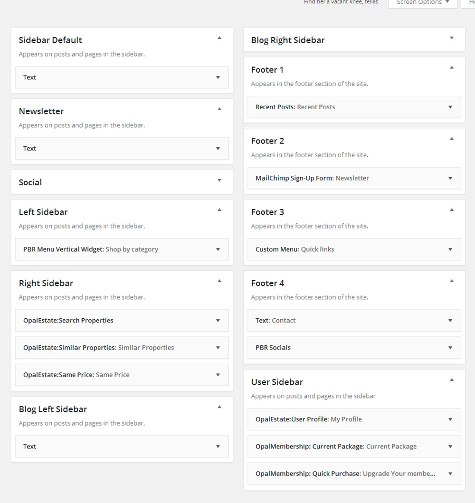
Follow our video guide to know more :
b. Install widget by plugin import widget
Go to Admin Panel -> Plugins -> Add new.
You can see broad add new plugin, please fill in " import widget" to search plugin.
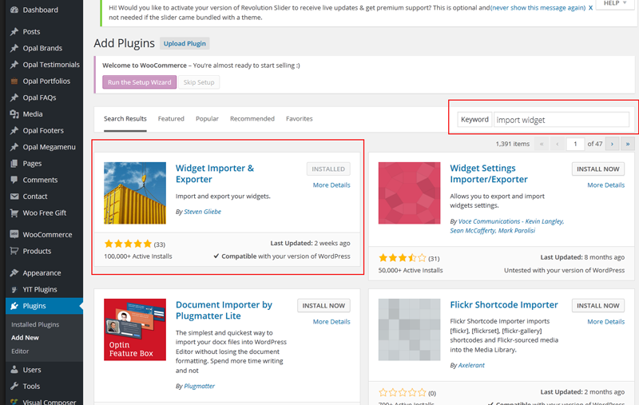
and go to Tool -> widget importer & exporter then you choose widget to import in your site.
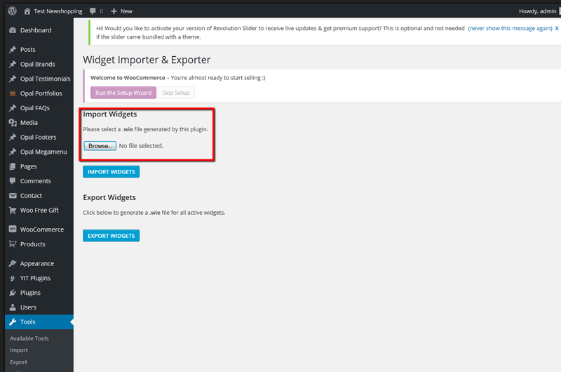
When import finish you can see widget :
2.If you choose import data by one click import
Go to Admin Panel -> Appearance -> Widgets.
You can see all our widgets will displayed in sidebar after import data.
Theme Configuration
Set Up Logo
You can upload your logo image in the Customize. If the logo is not uploaded, then your site name will be used.
Please, follow the steps below to upload your logo:
Step 1 - Login to your WordPress Dasrdoard.
Step 2 - Go to Appearance > Customize > General Settings Tab
Step 3 - Upload your logo by clicking on Select Image ( our current Fullhouse logo is 150px x 50px ).
Step 4- Upload your favicon - should be a 32px x 32px Png/Gif image.
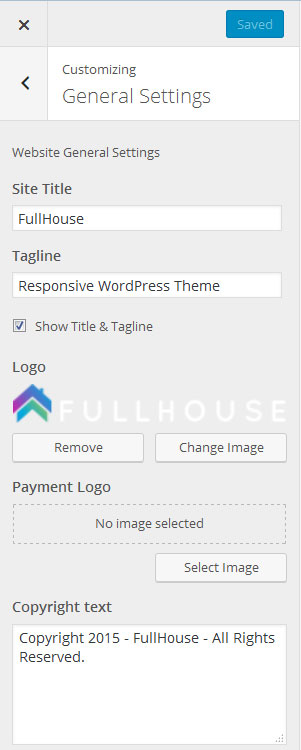
Set Up Menu
1. Creating your menu
Step 1- Login to the WordPress Dasrdoard. Step 2- From the 'Appearance' menu on the left-hand side of the Dashboard, select the 'Menus' option to bring up the Menu Editor.
Step 3 - Select Create a new menu at the top of the page.
Step 4 - Enter a name for your new menu in the Menu Name box.
Step 5 - Click the Create Menu button. Your menu is now defined, and you can now add pages to it (steps below).
2. Adding pages to your menu
Step 1 - Locate the pane entitled Pages.
Step 2 - Within this pane, select the View All link to bring up a list of all the currently published Pages on your site. Step 3 - Select the Pages that you want to add by clicking the checkbox next to each Page's title. Step 4 - Click the Add to Menu button located at the bottom of this pane to add your selection(s) to the menu that you created in the previous step. Step 5 - Click the Save Menu button once you've added all the menu items you want. Your custom menu has now been saved.
The Screen Options allow you to choose which items you can use to add to a menu. Certain items, like Posts or Products are hidden by default. The Screen Options are located in the top right corner of your WordPress Dasrdoard.

3. Assigning a Menu to a Location
Once you've created a menu and filled it with items, it's time to assign it to one of the theme pre-defined locations.
Step 1 - Go to Appearance > Menus and click Manage Locations. Step 2 - Assign each Theme Location with a menu. You can assign menus to multiple Theme Locations. Step 3 - Click the Save Changes button. 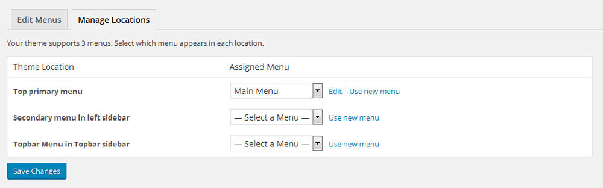Front end look like
Submenu will be displayed.
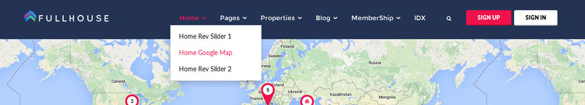
Set Up Home Page
You can quickly build a home page using Visual Composer for WordPress that is drag and drop frontend and backend page builder plugin that will save you tons of time working on the site content. You will be able to take full control over your WordPress site, build any layout you can imagine – no programming knowledge required
From your Dashboard admin Navigate to Pages
- Select All Pages to see all page then click edit one page you want
- Select Add New to create new page
A. How to use Visual Composer
Have you ever used Visual Composer ? Please follow that guide first : Visual Composer guide
Official Plugin Documentation For More information about the Visual Composer check the official documentation.
Watch video about Visual Composer
1. Classic Fullhouse.
You can insert code on table then Home page will be created automatically.
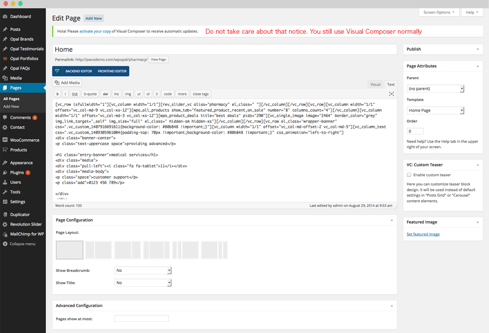
2. Backend Editor Fullhouse
Drag and drop elements you need to build your page layout.

How to use Back End Fullhouse
a. Add and modify Row Layout
Step 1 - Go to your page / post, first activate the backend editor and click Add Element

Step 2 - Select the Elements you want to use.
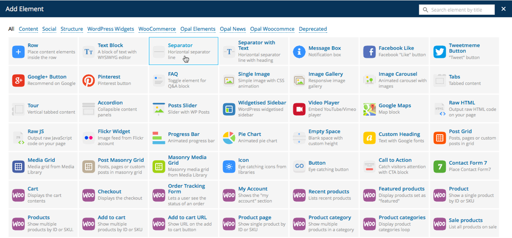
Step 3 - Click on the Edit This Row (pencil icon) to Edit the Row element ( in our example we use row with 3 columns filled with text block )

Step 4 - To change the Row layout ( number of columns ) you need to click the second Icon from the left then select a layout or custom to make your own
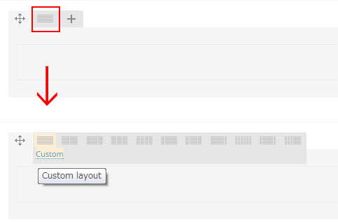
b. Edit Element
Pencil Icon - To Edit Row, Column or Module you need to click the Pencil icon.
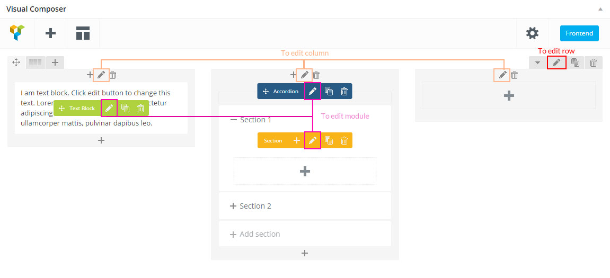
c. Duplicate Element
Pages Icon - To Duplicate Row or Module you need to click the Pages icon.

d. Remove Element
Trash Box Icon - To Remove Row, Column or Module you need to click the Trash Box icon.

e. About Row / Column / Custom heading / Text Block Design options
Design Options - When you edit row / column / custom heading / text block module, you can edit the design options

Row / Custom Heading / Text Block element have a default Bottom Margin of 35 pixel, you may want to set it to 0 if you don't want to have bottom space

It is Good to add bottom Padding to your Column, so they will looks good on mobile

Left and Right Margin should NEVER be modified, please left blank

For Row module the Left and Right Padding should also NEVER be modified, please left blank
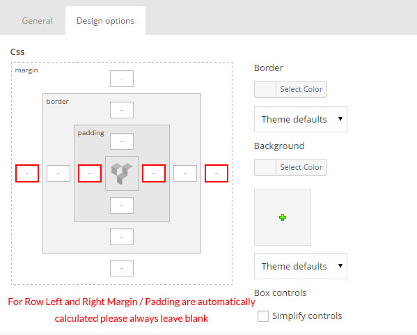
3. Page Options
a. Page Attributes
You can select page attributes on right sidebar of page admin layout. Each Page templates have each styles
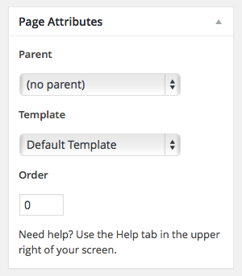
b. Page configure default template
For each page you can change the page layout style, header skin, footer skin and much more! Check the screenshot and read the documentation to see how it works
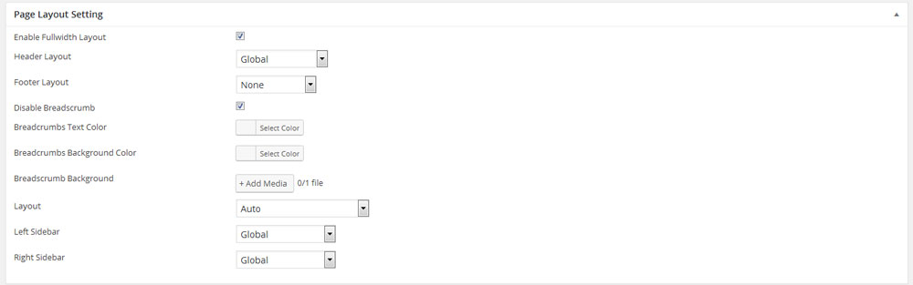
- Enable Fullwidth Layout - Select if you want the page to have a Fullwidth layout.
- Header Layout - Select skin specific for Header on page or use Global
- Footer Layout - Select skin specific for Footer on page or use Globalsidebar.
- Disable Breadcrumbs - Select if you want to disable the subtitle and breadcrumbs.
- Breadcrumbs Text Color - Select color for text of breadcrumbs.
- Breadcrumbs Background Color - Select color background for breadcrumbs.
- Breadcrumbs Background - Select image to set background.
- Layout Style - Select style for page to have a Auto, Left-Main Sidebar or Main-Right Sidebar or Left-Main-Right Sidebar.
B. Fullhouse Home Page Layout
Fullhouse come with more than 6 home page layouts. Please check out landing page to know more and build your home page you need.
1. Home Rev Slider 1
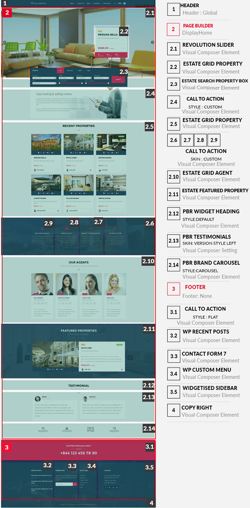
2. Home Google map
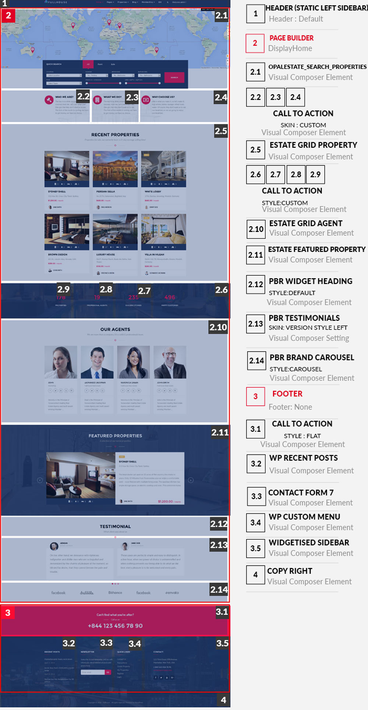
3. Home Rev Slider 2
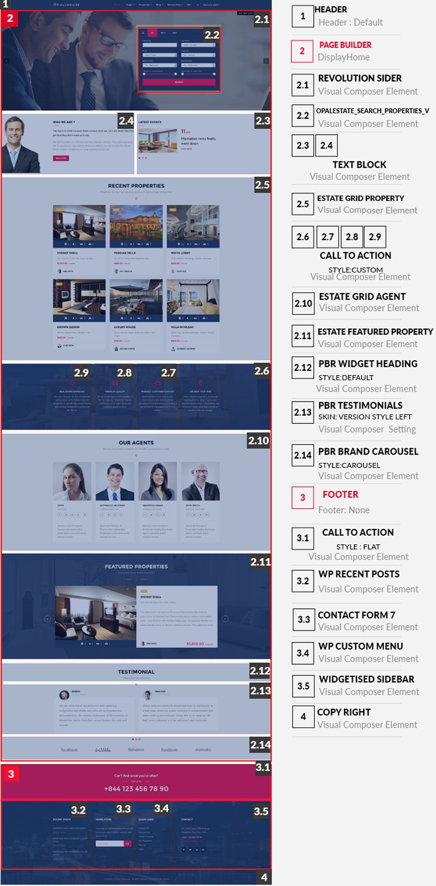
4. Home Transparent Search Properties

5. Home Transparent Search Agents
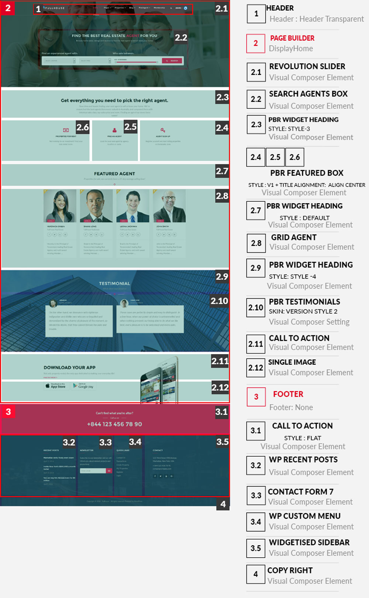
6. Home Header Search Location
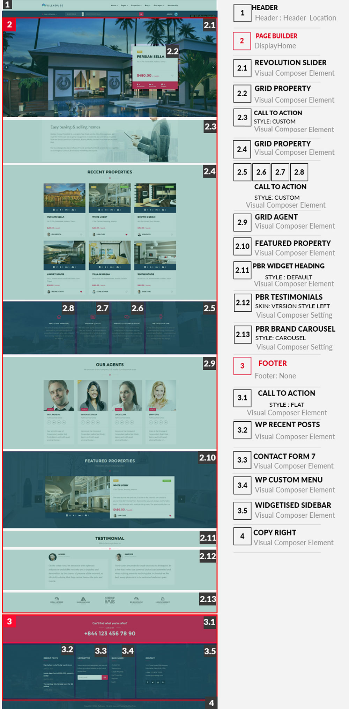
C. Set a page as Home Page
Step 1 - Go to Settings > Reading in your WordPress Dasrdoard panel.
Step 2 - Set "Front page displays" to a "Static Page".
Step 3 - In the drop down menu for "Front Page" choose a page which will be your home page.
Step 4 - Leave the drop down menu for "Posts page" empty, as this is not used by the theme.
Step 5 - Save changes.
Set Up Blog Page
1. Create the blog post
Step 1 - Log in to your WordPress Administration Panel (Dashboard)
Step 2 - Click the 'Posts' tab.
Step 3 - Click the 'Add New' sub-tab.
Step 4 - Start filling in the blanks: enter your post title in the upper field, and enter your post body content in the main post editing box below it.
Step 5 - As needed, select a category, add tags, post format, fill in the meta setings below the editor.
Step 6 - Upload a featured image for your Post.
Step 7 - Select Post Format. You can create blog post with a lot of Formats like link, gallery, image ..... Select format on Format box from in right sidebar
Step 8 - Scroll down until you see the Post Configuration box, there you will be able to customize the post.
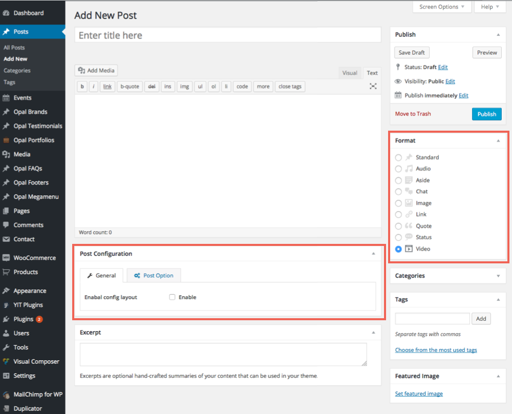
Step 9 - When your post is ready, click Publish.
2. Manager current all blogs
Navigate to Posts → All Posts
You can see all informations of you blog post, add new, edit or delete them.
3. Create Blog Page
Option 1. Create Blog Page with Visual Element
Step 1 - Log in to your WordPress Administration Panel (Dashboard)..
Step 2 - Click on Pages > Add New.
Step 3 - Give your page a name then Change the Editor to Backend Editor ( you need to have the Visual Composer plugin activated ).
Step 4 - Click on the Add Element button
Step 5 - Select the WPO New Elements.
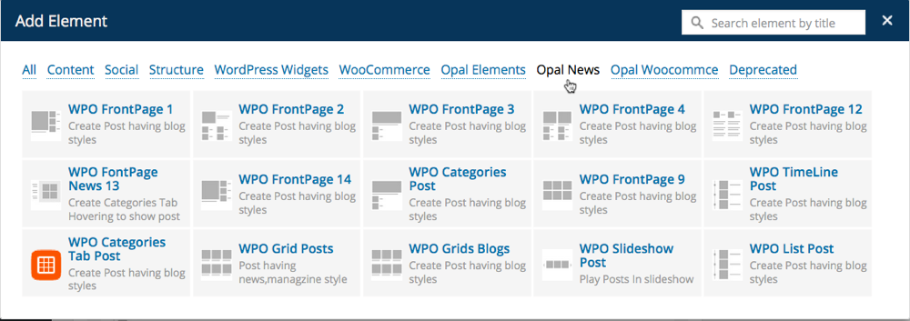
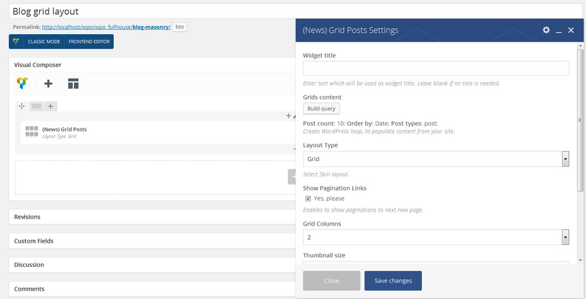
Front end look like :
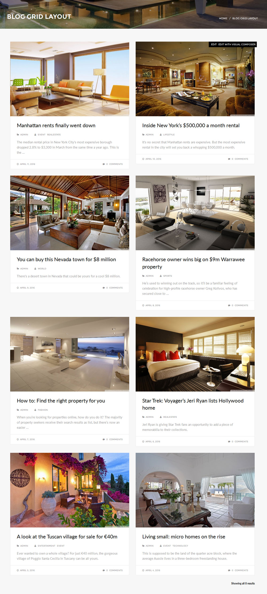
Option 2. Create Blog page with Blog template
Step 1 - Log in to your WordPress Administration Panel (Dashboard)..
Step 2 - Click on Pages > Add New.
Step 3 - From Page Attribubtes -> Select Template : Blog.

Step 4 - Set up Page configuration
- Enable Fullwidth Layout - Select if you want the page to have a Fullwidth layout.
- Header Layout - Select skin specific for Header on page or use Global
- Footer Layout - Select skin specific for Footer on page or use Globalsidebar.
- Disable Breadcrumbs - Select if you want to disable the subtitle and breadcrumbs.
- Breadcrumbs Text Color - Select color for text of breadcrumbs.
- Breadcrumbs Background Color - Select color background for breadcrumbs.
- Breadcrumbs Background - Select image to set background.
- Layout Style - Select style for page to have a Auto, Left-Main Sidebar or Main-Right Sidebar or Left-Main-Right Sidebar.
4. Blog Global Configure
Step 1 - From your admin Dashboard navigate to : Apperance > Customize > Blog

Step 2 - Set up Archive & Category Setting.
You can set Global (default) layout for archive blog page and category blog post then select content sidebar to display
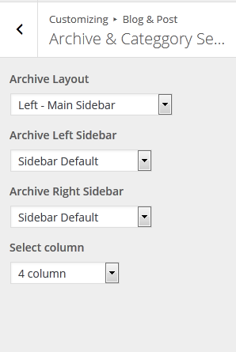
Step 3 - Set up Single Post Setting
- Show share post : enable or disable share post function
- Show related post : enable or disable related post
- Number of post to show : select number of related post to show
- Single blog layout : Select layout for single blog.
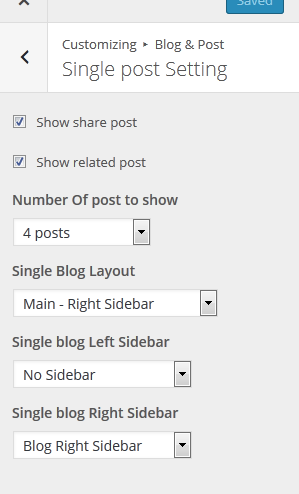
Set Up Footer
Set Up Opal Footer
Step 1 - From admin Dashboard, navigate to Opal Footer > Add Profile Footer
Step 2 - Using Visual Composer backend editor Fullhouse then add element to your Footer

Step 3 - Build your footer style with unlimited layout
Some version footer layouts for you.
Footer default.
Front end look like :
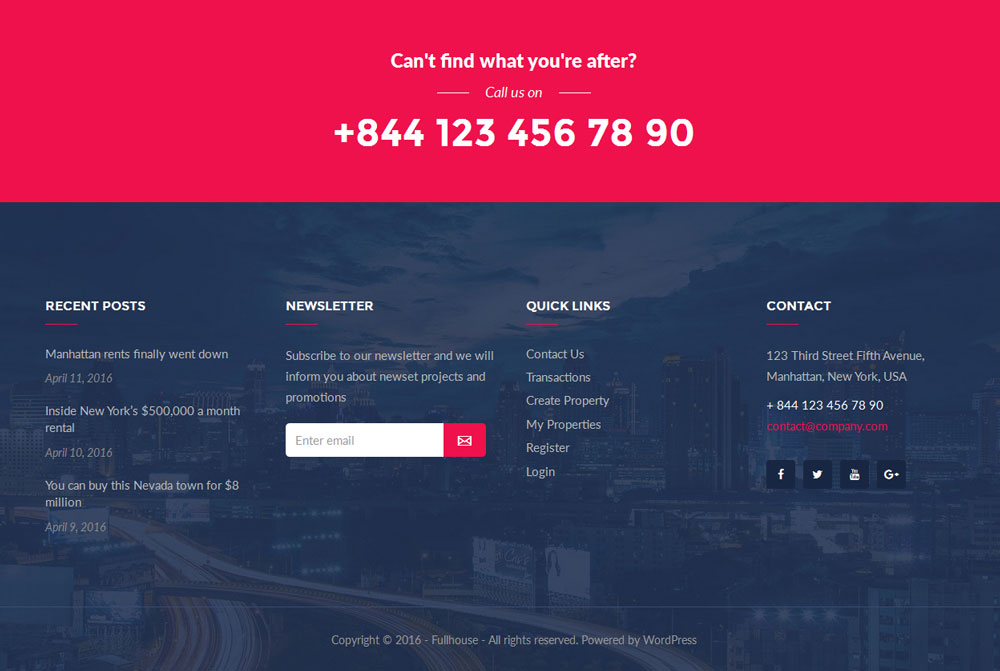
Visual Element Layout setting
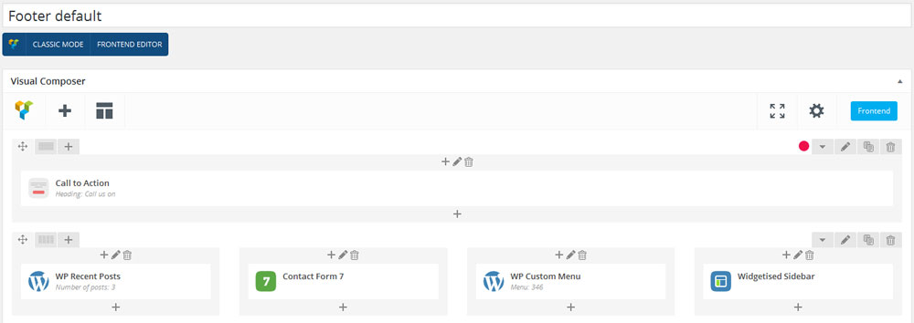
Step 4 - After create your footer profile. Navigate to : Apperance > Customize > Theme And Layout Setting.
Choose your footer for page.
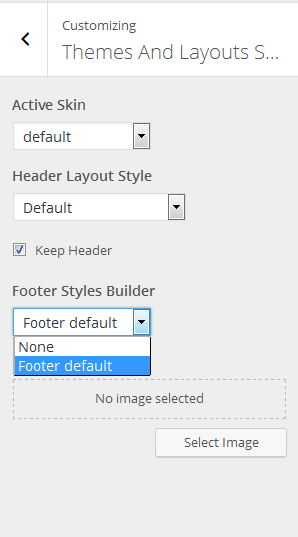
Specially, you can add background for image in this setting.
*********** If you want specific Footer for one of your pages. Please go to your page configuration. Select Footer version you want to display only on that page.
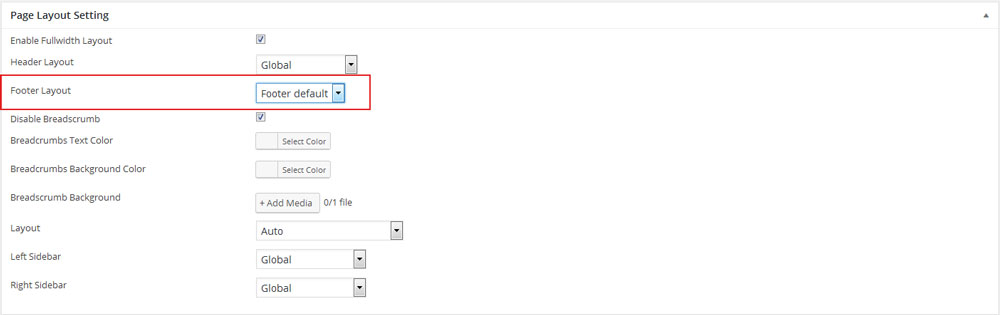
Opal Memberships
Opal Memberships allow you to accept payments, create membership and restrict content on your website.
1. Opal Memberships
a. Create Membership
Step 1 - Log in to your WordPress Administration Panel (Dashboard)
Step 2 - Click the 'Opal Memberships' tab
Step 3 - Click the 'All packages' sub-tab.
Step 4 - Click the 'Add New Package
Step 5 - Start filling in the blanks: enter your membership title in the upper field, and enter your subcription plans body content in the main subcription plans editing box below it.
Step 6 - As needed, setting option in Package information.

Step 7 - When membership is readly, click button "Publish".
Subcription plans look like:

b. User buy a membership
Step 1 - Click to button Sign up
In header of fullhouse has button Login and Register, please login(if you has been account) or register user(if you still not register account).
Then click to Membership tab in menu look like:
Step 2 - Click to button "Buy Now" to buy membership. It will go to page check out.

Step 3 - Paypal your account to accept membership(remember input all information about user).

Step 4 - Log in to your WordPress Administration Panel (Dashboard) (For Administrator).
Step 5 - Click the 'All payments' tab
Step 6 - Select payment has been checkout and click "edit"
Step 7 - Choose status of member is completed.
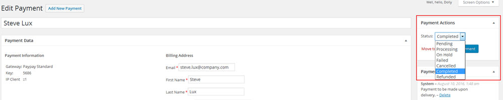
Next, please log in and click to "My membership":
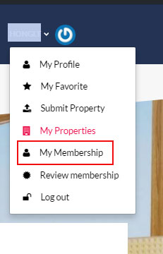
You will see all information about your membership:
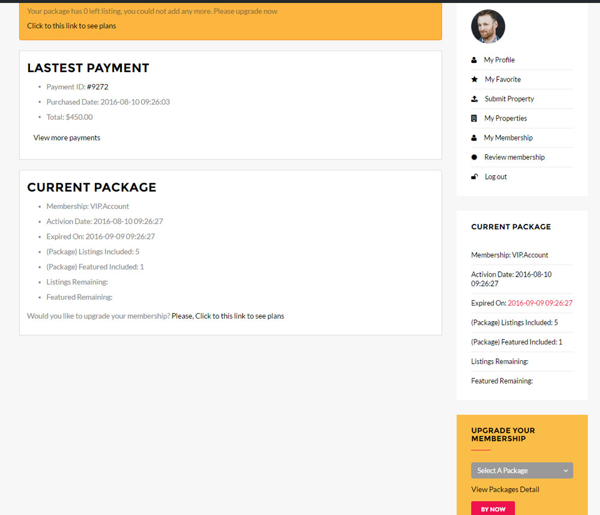
2. Coupon
Step 1 - Log in to your WordPress Administration Panel (Dashboard).
Step 2 - Click the 'All Coupons' tab
Step 3 - Click to "add new coupon".
Step 4 - Fill in all information about coupon.

3. Member user
Step 1 - Log in to your WordPress Administration Panel (Dashboard).
Step 2 - Click the 'Member Users' tab
It will display all users to buy membership.
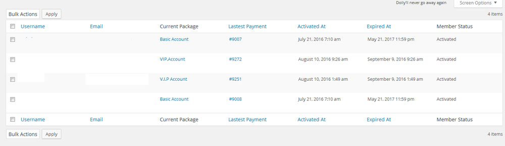
4. Categories
Step 1 - Log in to your WordPress Administration Panel (Dashboard).
Step 2 - Click the 'Categories' tab
Step 3 - Add to category for membership.
5. All Payments
Step 1 - Log in to your WordPress Administration Panel (Dashboard).
Step 2 - Click the 'All Payments' tab
It will dislay all payments that user buy membership.
6. Setting
Step 1 - Log in to your WordPress Administration Panel (Dashboard).Step 2 - Click the 'Setting' tab
Step 3 - Click the 'General' sub tab
Setting all pages like image:
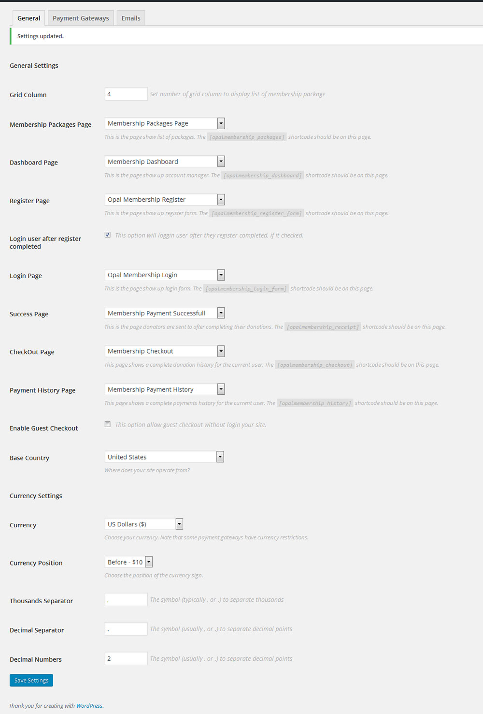
Step 4 - Click the 'Payment Gateway' sub tabchoose method of payment.
Step 5 - Click the 'E-mails' sub tabInput all box in emails tab.

Opal properties
Opal Properties allow An e-commerce toolkit that helps you sell anything. Beautifully.
If you want to know more about membership , please read guide "Opal Membership"
1. Create Property Categories
Step 1 - Log in to your WordPress Administration Panel (Dashboard)
Step 2 - Click the 'Opal properties' tab
Step 3 - Click the 'Property Categories'
Step 4 - Start filling in the blanks: enter your name title in the upper field, and enter slug and description for category.
Step 5 - When property categories is readly, click button"Add New Property category".
Property categories look like:
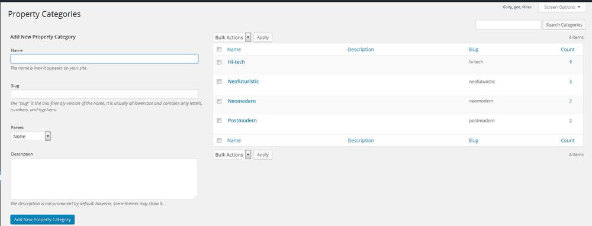
2. Create Amenities
Step 1 - Log in to your WordPress Administration Panel (Dashboard)
Step 2 - Click the 'Opal properties' tab
Step 3 - Click the 'Amenities'
Step 4 - Start filling in the blanks: enter your name title in the upper field, and enter slug and description for amenity.
Step 5 - When Amenity is readly, click button"Add New Amenity".
Amenitions look like:
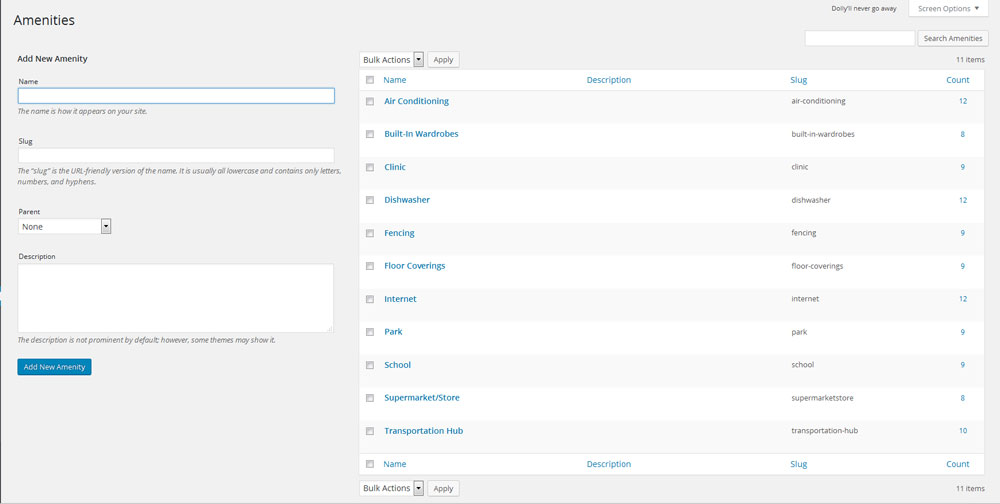
3. Create Locations
Step 1 - Log in to your WordPress Administration Panel (Dashboard)
Step 2 - Click the 'Opal properties' tab
Step 3 - Click the 'Locations'
Step 4 - Start filling in the blanks: enter your name title in the upper field, and enter slug and description for location.
Step 5 - When location is readly, click button"Add New Location".
Locations look like:
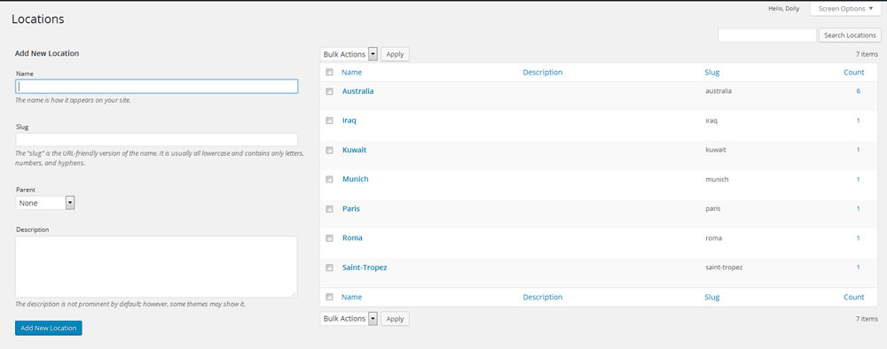
4. Create Status
Step 1 - Log in to your WordPress Administration Panel (Dashboard)
Step 2 - Click the 'Opal properties' tab
Step 3 - Click the 'Status'
Step 4 - Start filling in the blanks: enter your name title in the upper field, and enter slug and description for status.
Step 5 - When property categories is readly, click button"Add New Status".
Status look like:
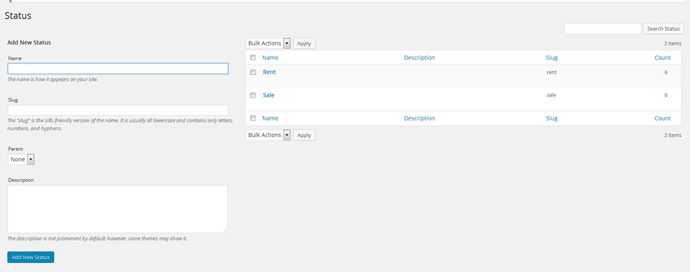
Font-end look like:
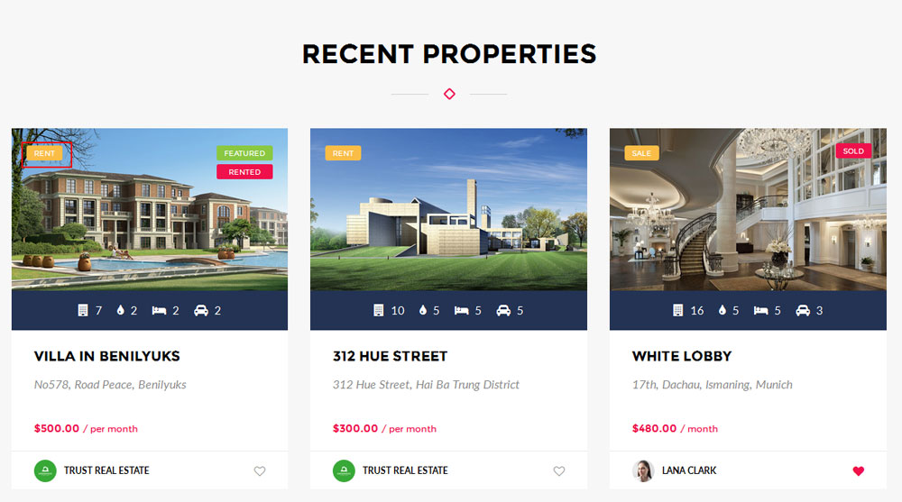
5. Create Types
Step 1 - Log in to your WordPress Administration Panel (Dashboard)
Step 2 - Click the 'Opal properties' tab
Step 3 - Click the 'Types'
Step 4 - Start filling in the blanks: enter your name title in the upper field, and enter slug and description for type.
Step 5 - When property categories is readly, click button"Add New Type".
Types look like:
6. Create Label
Step 1 - Log in to your WordPress Administration Panel (Dashboard)
Step 2 - Click the 'Opal properties' tab
Step 3 - Click the 'Label'
Step 4 - Start filling in the blanks: enter your name title in the upper field, and enter slug and description for label, next to choose background and color or image for label.
Step 5 - When property categories is readly, click button"Add New Label".
Label look like:
Front-end look like, when you choose label for property:
7. Create Property
Step 1 - Log in to your WordPress Administration Panel (Dashboard)
Step 2 - Click the 'Opal properties' tab
Step 3 - Click the 'Add New Property'
Step 4 - Start filling in the blanks: enter your subcription plans title in the upper field, and enter your property body content in the main property editing box below it.
Step 5 - As needed, select property categories, amenities, choose locations, and choose status, and types.
Step 6 - As needed, select featured image of property.
Step 7 - Scroll down until you see the property information box, there you will be able to customize the property and fill in all information in there.
In Property Management
Choose Featured to display your propery in featured.
Property SKU: input your property SKU.
Location: input your location.
Images gallery: select one or more image to show as gallery.
Video: input link of your video.
Property prices
Price: insert price for property .
Price label: input your label of price (e.g."per month").
Property Information
Built year: insert year to built property .
Address: input your address.
Parking: insert number parking to display in property .
Address: input your address.
Bedrooms: insert number of bedrooms .
Bathrooms: input number of bathrooms. And insert number of Plot size, Orientaion, Living rooms, Kitchens, Rooms.
Public Facilities
Set up Lable and Content for Facilities.
Agent Information
Choose agent in box to display agent in your properties .
Layout Template
Layout display: Choose Option "Inherit" or "Version 2" to display google map.
Step 8 - When property categories is readly, click button"Publish".
Property look like
Specially, User after register member may be create property in front-end
After login user, please click to "submit property":
User will see form to submit property, please fill in all information about your property. When it ready, please click "Save Property":
After propery is saved, Your property will in "pending" state only when admin click button "Publish", your property will be display in front-end and change "publish" state in "My property".
User can re-edit property has been created
8. Setting
Step 1 - Log in to your WordPress Administration Panel (Dashboard).Step 2 - Click the 'Setting' tab
Step 3 - Click the 'General' subtab
Fill config in general tab
Step 5 - Click the 'Emails' subtab
fill in all information of email.
Step 6 - Click the 'Search Area' subtabEnable function if you want to display in search.

It will display look like:
Step 7 - Click the 'Filter Area' subtab
Enable function that you want to display in filter area.
Step 8 - Click button "save setting".
If you want to more information about Opal Estate plugin , please read guide "Opal Estate" to help you more control it.
Opal Agents
Opal Agents allow you to accept payments, create subscription plans and restrict content on your website.
1. Create Agent
Step 1 - Log in to your WordPress Administration Panel (Dashboard)
Step 2 - Click the 'Agents' tab
Step 3 - Click the 'Add New Agent
Step 4 - Start filling in the blanks: enter your agent title in the upper field, and enter your agent body content in the main agent editing box below it.
Step 5 - As needed, select featured image of agent and select level for agent.
Step 6 - Scroll down until you see the agent for seachable and agent information box, there you will be able to customize the agent and fill in all information in there.
Input all data of agent information
Step 7 - When Agent is readly, click button"publish".Agent look like:
2. Agent Levels
Step 1 - Log in to your WordPress Administration Panel (Dashboard)
Step 2 - Click the 'Agents' tab
Step 3 - Click the 'Agent Levels

Create Testimonials
Step 1: Go to Opal Testimonial from Dashboard then create content of Testimonials
Step 2: Drag WPO Testimonial elements by using Visual Composer on page you want to display testimonials.
You can choose some setting like title, skin ....
Opal Offices
1. Create Office Categories
Step 1 - Log in to your WordPress Administration Panel (Dashboard)
Step 2 - Click the 'Offices' tab
Step 3 - Click the 'Office Categories'
Step 4 - Start filling in the blanks: enter your name title in the upper field, and enter slug and description for category.
Step 5 - When Office categories is readly, click button"Add New category".
Office categories look like:
2. Create Office
Step 1 - Log in to your WordPress Administration Panel (Dashboard)
Step 2 - Click the 'Offices' tab
Step 3 - Click the 'Add New Office
Step 4 - Start filling in the blanks: enter your office title in the upper field, and enter your office body content in the main agent editing box below it.
Step 5 - As needed, select featured image of office and select category for office.
Step 6 - Scroll down until you see the Office Team box, there you will be able to customize the office and fill in all information in there.
Input all data of office information
Step 7 - Scroll down until you see the Office Information box, there you will be able to customize the office and fill in all information in there.
Input all data of office information
Step 7 - When Office is readly, click button"publish".
Office look like:
Create Paralax
With Visual Composer you can create Parallax Sections
Step 1: From your admin dashboard. Go to Page
Step 2 : Click on the Edit This Row (pencil icon) beside row you want to make it become Parallax Sections.
Step 3: In General Tab, select option Parallax
Step 4: In Design options tab, ADD padding and REMOVE margin for better result, add a Background Image change to Cover and then Saves changes
Step 5: - Update or Publish your page and you should now have a section with parallax background
Create Brands
Step 1: Go to Opal Brands from Dashboard then create Brands
Step 2: Drag WPO Brands elements by using Visual Composer on page you want to display testimonials.
You can choose some setting like title, number of brands ....

Create Newsletter
We are using MailChimp for WP plugin for Newsletter subscribe. You can read more about MailChimp from here
Follow that step below to help you can collect email of subscribers.
Step 1 - Signup for Mailchimp account then create your lists to collect email
Step 2 - Install and active plugin MailChimp for WP
Step 3 - Navigate to MailChimp for WP > MailChimp then connect with your mailchimp account you created from step 1
Step 4 - Create mailchimp form to collect email. Navigate to Forms
Import HTML Code below on section Form mark-up Source
Source :
<div class="form-style-1"> <div class="description"> <span class="title">Sign up to newsletter</span> <span class="desc">To receive updates</span> <span class="content">Sign up to get exclusive offers from our favorite brands and to be well up in the news.</span> </div> <div class="input-form"> <input id="mc4wp_email" class="form-control" name="EMAIL" required="required" type="email" placeholder="" /> </div> <div class="button-submit"> <input class="btn btn-outline-inverse btn-outline-sm" type="submit" value="Subcribe" /> </div> </div>
Step 5 - After creating from of your plugin. You must set position where you want to display.
Going Appearance -> Widgets then drag mailchimp widget to Newsletter Sidebar. You can bring that sidebar to every position you want. ( You can drag to left, right sidebar for each page. You can drag to Footer position.... )
Create Contact Page
1. Create Contact Form.
Make sure you install and active Contact Form 7 plugin to continue reading.
Step 1 - Log in to your WordPress Dashboard, go to Contact > Add New

Step 2 - Give a Name to your form and change Mail Info

Step 3 - Edit the Form field to change the Form Layout
2. Create Contact Page
Step 1 - Log in to your WordPress Administration Panel (Dasrdoard)..
Step 2 - Click on Pages > Add New.
Step 3 - Give your page a name then Change the Editor to Backend Editor ( you need to have the Visual Composer plugin activated ).
Step 4 - Click on the Add Element button
Step 5 - Select the Contact Form 7 element.

Step 6 - The Contact Form 7 Settings should appear. Select the Form you want to use you can also customize the Color and change the fields layout and button design
Step 7 - Update / Publish your page
Theme Customization
Fullhouse Theme use Customizer provides an ultra effective and intuitive way to customize theme layout & setting with real-time preview. Bring all of settings to customizer, you do not need to using another theme option anymore
To access Customizer go to your admin Dashboard Navigate to Appearance >> Customize
1. General Setting : Manage general setting like your logo,favicon, copyright, ....
2. Theme And Layout Setting: select your header style, footer style for global
3. Header Setting : Set up social for header
4. Portfolio Setting : manage global setting for Portfolio
5. Social Sharing Setting: select social channel apperance to sharing
6. Header image : create customize image for breadcrumb and title section
7. Fullhouse :An e-commerce toolkit that helps you sell anything
8. Blog &post : manage global setting for Blog
9. Menu: manage setting of Menu
How to translate the theme
The easiest way to translate theme to the language of your choice is to use "WPML" plugin.
- To begin, be sure you have the WPML Plugin installed and activated, along with the WPML String Translation plugin.
- To set up WPML the first time, follow their Getting Started Guide.To begin translating, select WPML (in the Dashboard menu) -> String Translation. You should see a list of the strings in the theme (there should be only four), with blue translation links to the right. Click these links to reveal the list of languages you use on your blog and the associated translations.
- How to set and translate main features of the theme
- Using translation management http://wpml.org/documentation/translating-your-contents/using-the-translation-editor/
- Translation Management & Features – http://wpml.org/documentation/translating-your-contents/using-the-translation-editor/translation-management-features/
- Translating URL slugs – http://wpml.org/documentation/getting-started-guide/translating-page-slugs/
- How to scan strings coming from the theme
- http://wpml.org/documentation/getting-started-guide/theme-localization/
- How to translate strings using String Translation
- http://wpml.org/documentation/getting-started-guide/string-translation/
- If adjustment is needed for WPML language switcher please also add this
- http://wpml.org/documentation/getting-started-guide/language-setup/custom-language-switcher/
- If you need more help with WPML plugin. Please go WPML Forum
FAQs
1. How to update Theme
a. Update Theme via WordPress
Updating the theme via WordPress is very similar to the install process via WordPress. Make sure you had backup all of your customization in our theme.
Follow the steps below to update your theme via WordPress:
Step 1 - Download latest theme package on ThemeForest
Step 2 - Log into your WordPress Dashboard.
Step 3 - Go to Appearance > Themes.
Step 4 - Deactivate the Fullhouse Theme by simply activating a different theme. Once you activate a different theme, you can delete the Fullhouse theme.
Step 5 - Delete the Fullhouse Theme. Do not worry, your content will not be lost!
Step 6 - Then simply upload the newest “fullhouse_theme.zip” file in the Appearance > Themes section. Click on the Install Themes tab at the top and choose to upload the zip file. You have this step explained in section: Theme Installation via WordPress.
b. Update theme via FTP
Updating the theme via FTP is very similar to the install process via FTP.
Follow the steps below to update your theme via FTP:
Step 1 - Go to .../wp-content > themes location on your server using a FTP client and backup your "Fullhouse" theme folder by saving it to your computer, or you can choose to simply delete it. Your content will not be lost.
Step 2 - Download the new version of Fullhouse theme from your Themeforest and retrieve Fullhouse folder by unpacking the zip that you download from Themeforest and fullhouse_theme.zip.
Step 3 - Then simply drag and drop the new "Fullhouse" theme folder into .../wp-content > themes location. Choose to “Replace” the current one if you did not delete it.
Step 4 - Log into your WordPress Dasrdoard, go to Appearance > Themes and activate the new Fullhouse theme.
2. How to create Child Theme
What is a Child Theme?
A child theme is a theme that inherits the functionality of another theme, called the parent theme. Child themes allow you to modify, or add to the functionality of that parent theme. A child theme is the best, safest, and easiest way to modify an existing theme, whether you want to make a few tiny changes or extensive changes. Instead of modifying the theme files directly, you can create a child theme and override within.
Why use a Child Theme?
if you modify an existing theme and it is updated, your changes will be lost. With a child theme, you can update the parent theme (which might be important for security or functionality) and still keep your changes. It’s a great way to get started if you are just learning WordPress theme development.
How to create Create child ?
Follow that documentation to create Child Theme Child Themes - Codex
Using that plugin to create Child Theme : One Click Child Theme
3. How to Speed Optimization
If you think your website takes too much time to load maybe you should.
- Install a Cache Plugin for WordPress. We recommend W3 Total Cache.
- Install an Image Compress Plugin. We recommend WP Smush It.
- Install a Database Optimizer Plugin We recommend WP Optimize
- Reduce the number of posts on the page
- Reduce the number of unnecessary plugins.
- Use more icons and less images.
Get Support
If you are unable to find your answer here in our documentation, please take a photo screenshot with description detail about your problem or idea. Send all to email : help@wpopal.com or ticket: info@wpopal.com. Our technical team will check and try their best to help
Our support scope
Our support covers configuration, building site as demo, trouble using any features, and bug fixes. We don't provide support for customizations or 3rd party extension.
Our support time
We try our best to monitor the email around the clock, however, this is not always possible due to different time zones. We will try to reply you as fast as we can.
Our working time is 8.00 AM - 5.30 PM, Monday to Friday (GMT+7). So if ask for help in the weekend, you may have to wait a little bit for support and please be patient.